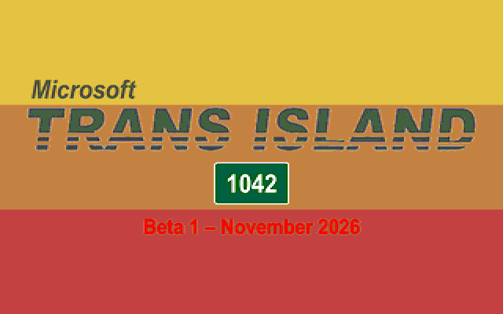
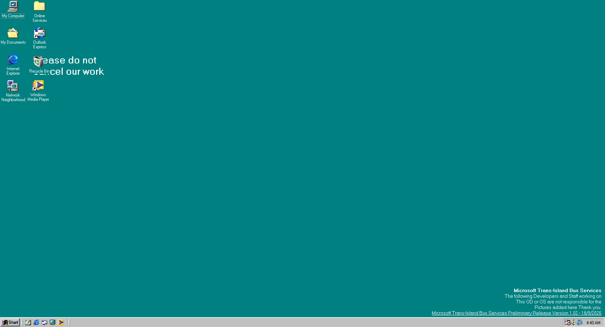
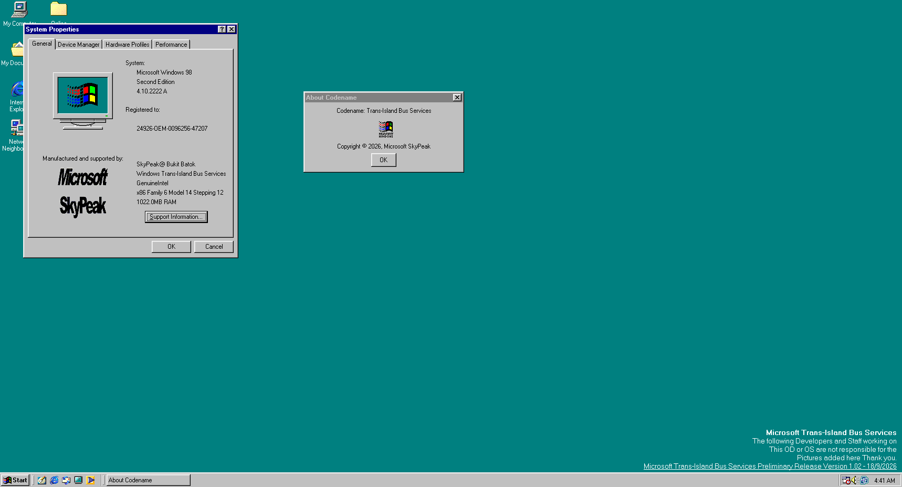

Singapore Bus Services
Full Name: Microsoft Windows Singapore Bus Services
Codenamed: Microsoft Singapore Bus Services
Status: Pre-Posting
Release Scheduled: TBA
Release to Manufacturing: TBA
First Release: TBA
Ownership Part of The Company: 
Microsoft SBS is a 2nd developing Project of Microsoft SkyPeak. Like TIBS. It is also Intended for Microsoft SkyPeak's Windows Transport Project
which majorly release Windows Themed Transport Network of Singapore. There is preview snaps of Windows SBS but no compiled build due to the Windows still in development.


